@thiagoeti(abre em nova aba)
- AI Enabler
- AI Engineer
- Product AI Engineer
- Software AI Engineer
- FDE · Forward Deployed Engineer
Coloco IA em produção dentro de operações com sistemas legados e dados bagunçados.
Coloco IA em produção dentro de operações com sistemas legados e dados bagunçados.
Como o olho agrupa elementos
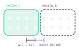
Law of Common Region
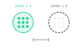
Law of Proximity
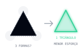
Law of Prägnanz
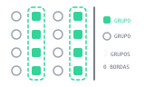
Law of Similarity
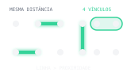
Law of Uniform Connectedness
Quanto custa escolher e agir
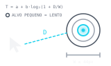
Fitts's Law
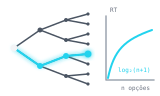
Hick's Law
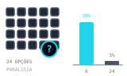
Choice Overload
Cognitive Load
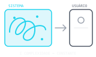
Tesler's Law
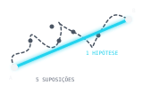
Occam's Razor
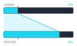
Pareto Principle
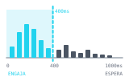
Doherty Threshold
O que fica e o que some
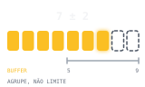
Miller's Law
Working Memory
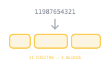
Chunking
Serial Position Effect
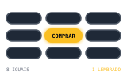
Von Restorff Effect
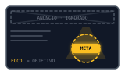
Selective Attention
Zeigarnik Effect
Como o usuário age de fato
Jakob's Law
Mental Model
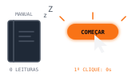
Paradox of the Active User
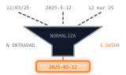
Postel's Law
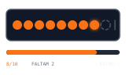
Goal-Gradient Effect
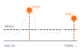
Peak-End Rule
Aesthetic-Usability Effect
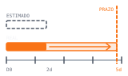
Parkinson's Law
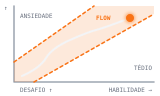
Flow
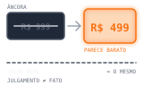
Cognitive Bias
Antes e depois na UI
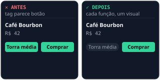
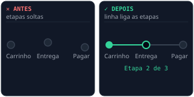
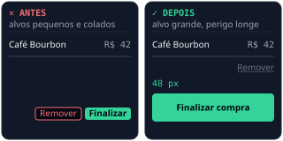
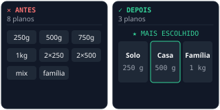
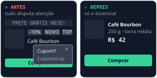
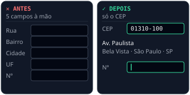
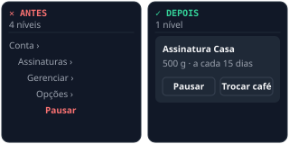
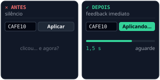
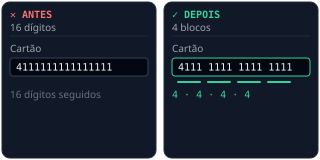
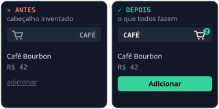
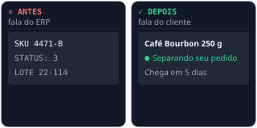
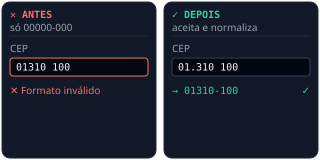
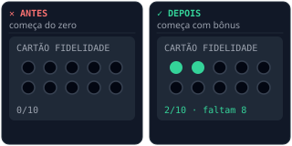
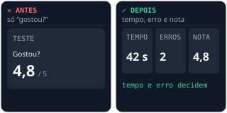